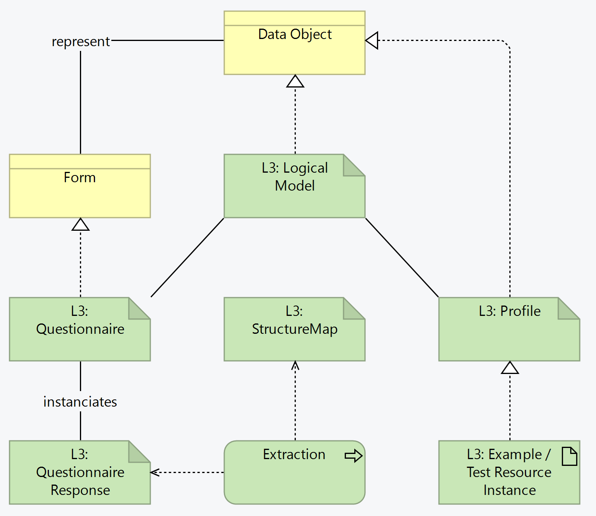

SMART Guidelines Starter Kit
2.1.0 - ci-build

SMART Guidelines Starter Kit
2.1.0 - ci-build

SMART Guidelines Starter Kit, published by WHO. This guide is not an authorized publication; it is the continuous build for version 2.1.0 built by the FHIR (HL7® FHIR® Standard) CI Build. This version is based on the current content of https://github.com/WorldHealthOrganization/smart-ig-starter-kit/tree/l4 and changes regularly. See the Directory of published versions
Data used in the different stages of the business processes can be captured from the system, or directly from the user. When data is intended to be captured from the user, a form is created, which in L3 terms corresponds to a Questionnaire.
Since the purpose of the forms is to expose data in a user-friendly manner (and following the L2 DAK data structures), it is expected that several of these forms will result in the data being extracted to FHIR-native resources, like Patient, Observation, Condition, etc.
This means the L2 data structures are represented both as instances Questionnaires and as FHIR resource profiles, and these FHIR resources can be obtained natively or by extracting a QuestionnaireResponse:

SMART Guidelines make use of the FHIR Structured Data Capture specification to define the common aspects around Questionnaire resources:
Forms are reuse other forms and make use of value sets.
This extraction uses structure maps and is represented as follows:
Example QuestionnaireResponses for testing
For each data element in the logical model (i.e. in the data dictionary)
targetStructureMap extension.StructureMap authoring requires tooling for validation. Please see the tooling section below.
As with all FHIR Conformance resources, change management is critical. Do not set the version element of Questionnaires and StructureMaps defined in the SMART Guideline, the version element will be set by the publication process. See the versioning topic for more information on change management.
Example instances (QuestionnaireResponse, logical model instance, and FHIR resource instances) may be tracked.
| Tool | Usage | Doc |
|---|---|---|
| Matchbox | Compile FML files; Extract data | |
| LHC Form viewer | Display questionnaires | |
Several SDC-related tools and implementations are available from the HL7 Confluence.
SMART Guidelines - Immunizations (Measles): Questionnaires